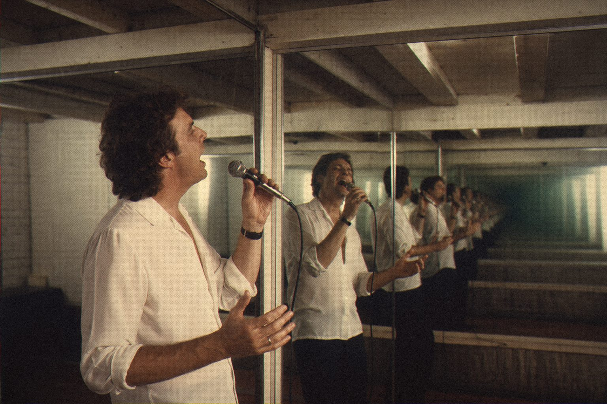

He came in alone. He left as a choir.
Harmonies used to mean hiring singers, or one singer and a very long night. MuchoVox makes the harmonies from the voice you already have.
It's a natural-sounding harmonizer with pitch correction built in. Thirds, fifths and doubles stay human, without chipmunks, without warble and without that tell-tale shimmer.
It's BuenoVOX's bigger sibling, for the moment the chorus needs a whole congregation.

Harmonies from a single voice.
MuchoVox
Vocal harmonizer and pitch corrector.
Open source · AU · VST3
Jardim SonoroOpen-source audio research
Download: jardimsonoro.com/audioSource & issues: github.com/nagualcode/muchovox
Vocals07